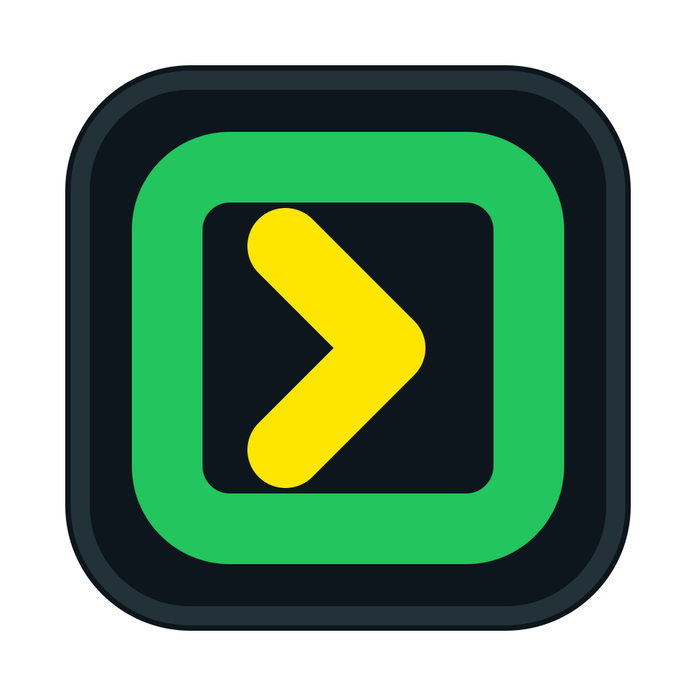
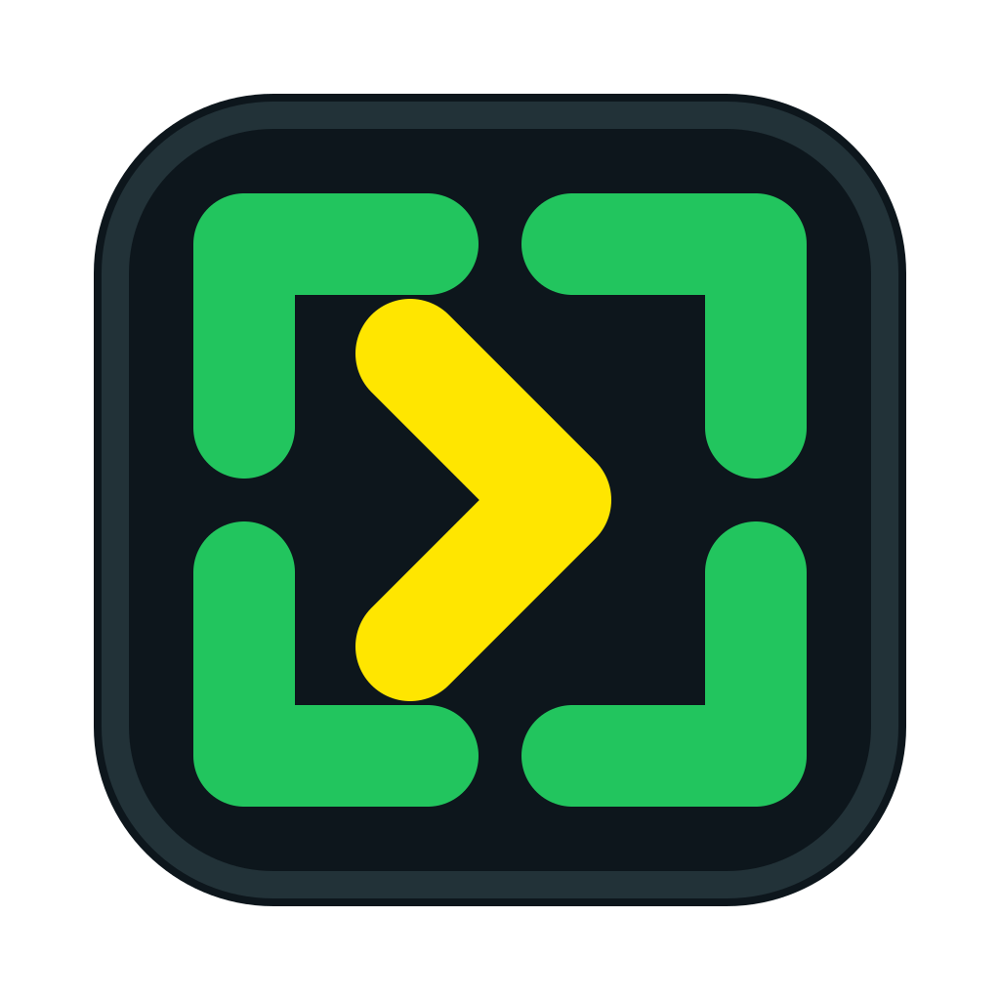
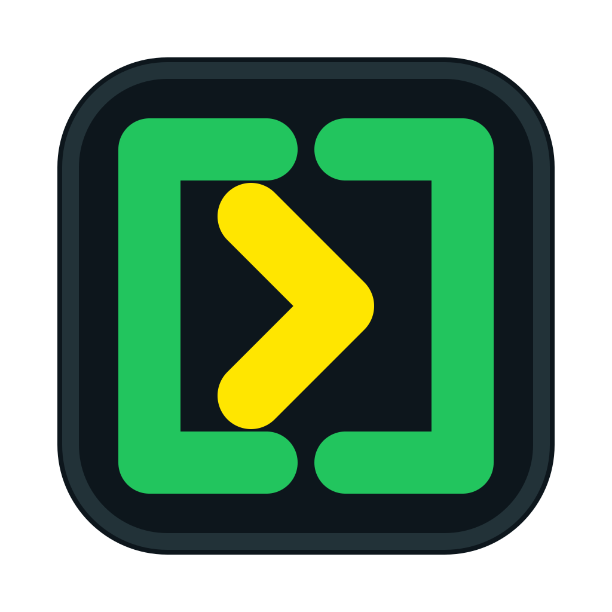

OPTION M
完整方令印

64PX32PX16PX
完整绿色方印表示清晰的个人权限边界，黄色箭头表示执行。轮廓最稳定、最像正式应用图标，但方框感也最强。
Loom / App Icon Review / R5

完整绿色方印表示清晰的个人权限边界，黄色箭头表示执行。轮廓最稳定、最像正式应用图标，但方框感也最强。

四个绿色印角保留篆刻缺口，也与 Hook 的四角构图形成家族关系；中央黄色箭头让它从“捕获”变成“发令执行”。

左右两块绿色符印代表用户授权与 Loom 验证，匹配后由黄色箭头执行。最符合信任与签名语义，但小尺寸可能像两侧括号。